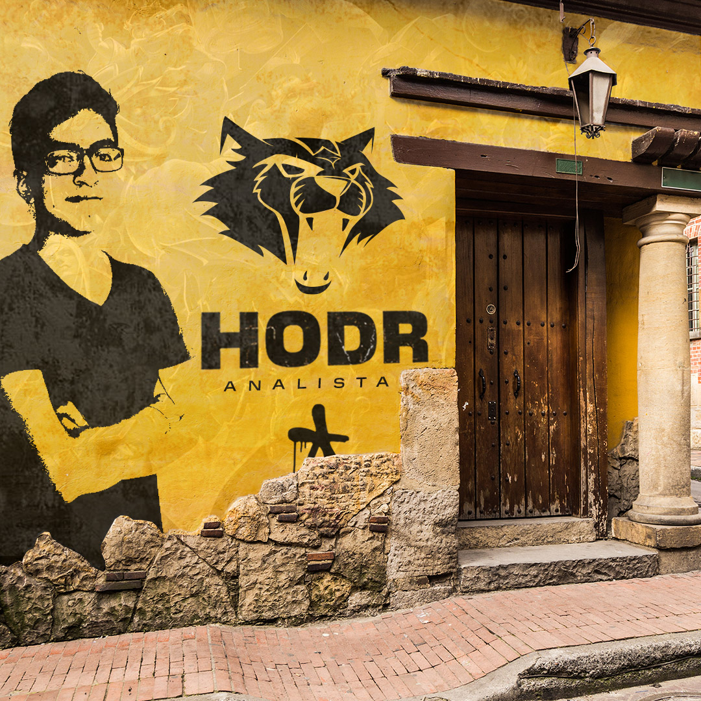

HodrJuan Sebastián "Hodr" Corso
Project Manager — Data Analyst — Bogotá, Colombia
Project Manager en ciberseguridad, certificaciones en analítica de datos, co-fundador de SadHub Esports y actualmente parte del staff de la Selección Colombiana de League of Legends. El camino no fue lineal, pero cada etapa tiene sentido cuando se mira hacia atrás.

HodrJuan Sebastián "Hodr" Corso
Project Manager — Data Analyst — Bogotá, Colombia
Mi nombre es Juan Sebastián Corso, conocido en la escena como Hodr. Soy de Bogotá, Colombia. Actualmente me desempeño como Project Manager en una empresa de ciberseguridad y, en paralelo, mantengo una trayectoria activa en la escena competitiva de League of Legends como analista de datos y co-fundador de SadHub Esports.
El apodo viene de la mitología nórdica: Höðr es el dios ciego que, sin saberlo, desata el Ragnarök. Actuar con información incompleta, tomar decisiones de alto impacto y entender que los resultados a veces superan las intenciones. En los esports, eso pasa en cada partida.
A lo largo de los años he complementado mi experiencia práctica en esports con certificaciones formales en analítica de datos. Ese proceso de formación continua es lo que permite conectar el trabajo de gestión de proyectos con el análisis que exige el staff técnico de un equipo competitivo.
La intersección entre gestión de proyectos, ciberseguridad y analítica de datos comparte un núcleo común: tomar decisiones estructuradas bajo presión, con información incompleta y consecuencias reales. Esas habilidades se transfieren directamente al esport de alto rendimiento.
Mi paso por la escena competitiva colombiana comenzó en 2019 con Chi Army y se extendió por cuatro equipos hasta 2021, cuando tomé la decisión de retirarme de las ligas formales de League of Legends. El recorrido completo:
Tras el retiro de las ligas formales de LoL en 2021, el foco se desplazó sin desaparecer del esport. Seguí involucrado en proyectos de Valorant sin competición de liga formal y, junto a un grupo de personas con la misma visión, fundé SadHub Esports.
SadHub es una organización colombiana de esports con equipos activos en League of Legends y Valorant, co-fundada junto a Jose, Saggek, Core y Solera. En 2025 el equipo compitió en el VCL LATAM North ACE Stage 1, llegando a cuartos de final del qualifier. La web de la organización en sadhub.online fue desarrollada junto a mi novia.
La Esports Nations Cup es el equivalente a un mundial de selecciones para los esports. League of Legends es uno de los 16 títulos confirmados para la primera edición, junto con Counter-Strike 2, Valorant, Dota 2, PUBG y otros títulos. El torneo fue anunciado en agosto de 2025 y es el proyecto más ambicioso del recorrido.
Trabajar con una selección nacional implica una capa adicional de complejidad respecto a cualquier equipo de club: los jugadores no tienen historia compartida de entrenamiento, los tiempos de preparación son acotados, y el proceso de selección y evaluación del roster requiere analizar toda la escena doméstica en paralelo. Es la culminación natural de todo lo construido desde 2019.
El rol de analista es frecuentemente mal entendido desde afuera. No es simplemente ver VODs y señalar errores. El trabajo real es más granular:
Trabajar en el staff de equipos competitivos enseña algo que ninguna certificación captura del todo: la diferencia entre el análisis correcto y el análisis útil. Un informe puede ser técnicamente impecable y aun así no mejorar el rendimiento si no está adaptado a cómo ese grupo específico procesa la información.
El analista vive en la intersección entre los datos y las personas. Esa capacidad de comunicación se desarrolla con la práctica, no con hojas de cálculo. Y es exactamente la misma habilidad que define un buen Project Manager.